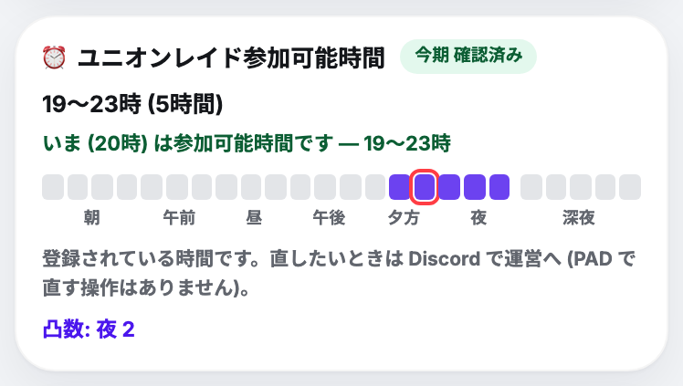
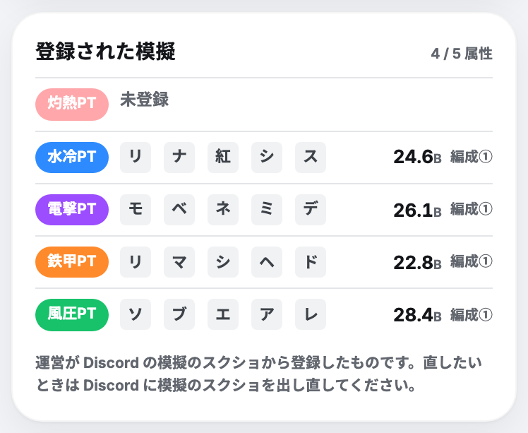
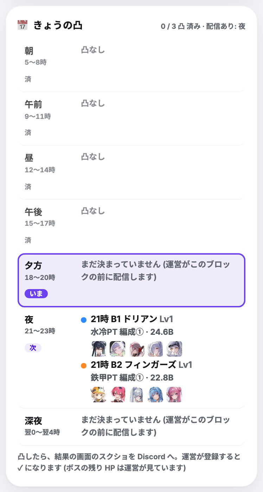
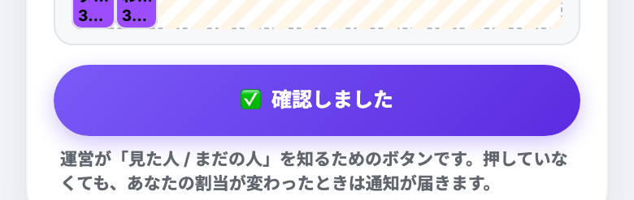
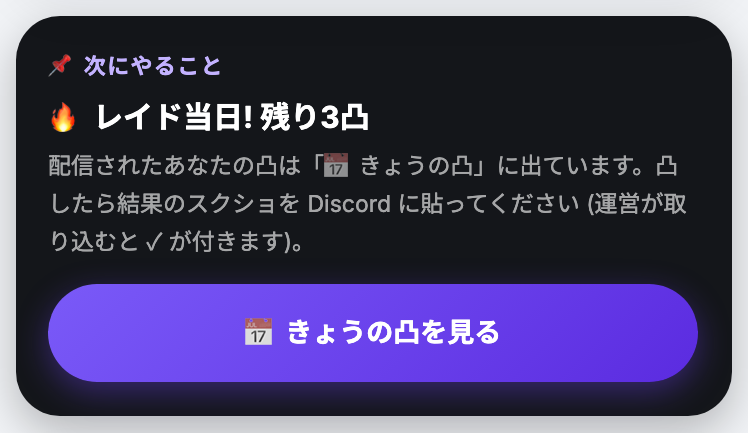
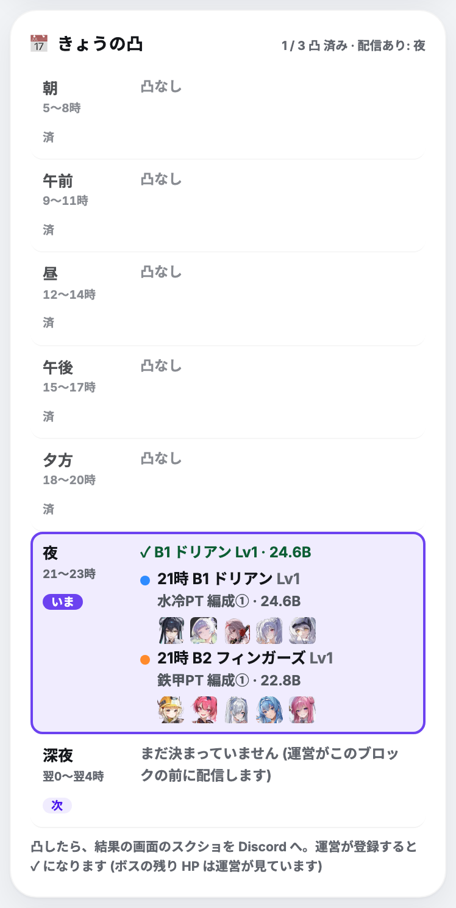

PAD の中で入力するものはありません。運営が PAD に登録し、ブロックの前に「あなたの凸」を配信します。
運営が登録すると、ホームの ⏰ 参加可能時間 / 📘 登録された模擬 / 🔒 予約 に出て通知が届きます。違っていたら Discord で運営へ。


配信されるのは次のブロックのぶんだけ。後ろのブロックは、そのブロックの前に配信されます。




運営はブロックごとに、そのブロックに出られる人で凸を組み、ブロックの前に配信します。凸数を書いたブロックには、その数より多くは割り当てません。